먼저 생각해 보세요.
Die Jacke passt mir. 재킷은 누구에게 맞나요?
mir는 ich의 3격이에요. passen은 사람을 3격으로 써요.
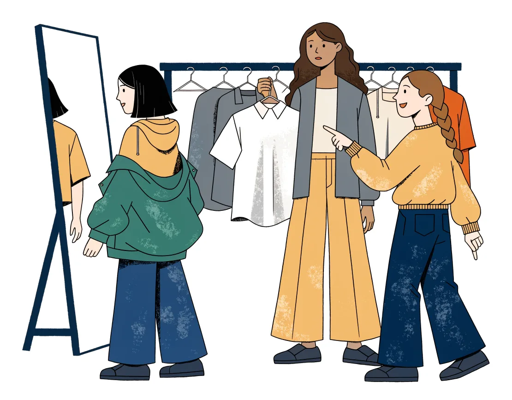
5월 말, 날이 따뜻해졌어요. Yuna는 Emma, Elif와 함께 여름에 입을 재킷을 사러 시내에 갔어요. 그런데 일주일 뒤에 새 재킷의 지퍼가 고장 나요.
눌러서 들어 보세요.
먼저 생각해 보세요.
Die Jacke passt mir. 재킷은 누구에게 맞나요?
mir는 ich의 3격이에요. passen은 사람을 3격으로 써요.
Lektion 7의 낱말 다섯 개를 다시 떠올려 보세요.
문법 Adjektive im Dativ, Verben mit Dativ (passen, gehören, helfen), Was für ein …?
이 과를 마치면 옷과 스타일을 묘사하고, 가게에서 물건을 교환하거나 돈을 돌려받을 수 있어요.
토요일 오후, 시내의 옷 가게예요.
들으면서 찾아보세요. Yuna는 어떤 재킷을 찾고 있나요?
일주일 뒤, 같은 가게예요. Yuna가 재킷을 들고 다시 왔어요.
들으면서 찾아보세요. 재킷에 무슨 문제가 있나요?
두 대화를 듣고 답하세요.
Yuna는 왜 새 재킷이 필요한가요?
Was für eine Jacke sucht Yuna?
Yuna mag enge Jacken.
Ich mag keine engen Jacken.
Was kostet die grüne Jacke?
Was ist das Problem mit der Jacke?
Yuna bekommt eine neue grüne Jacke.
초록색이 없어서 돈을 돌려받아요.
Wem gehört die Tasche?
낱말 29개예요. 낱말이나 예문 앞의 단추를 누르면 소리가 나요. 명사는 der, die, das를 색으로 구분했어요.
die Kleidung 옷, 의류
Ich trage gern bequeme Kleidung.나는 편한 옷을 즐겨 입어요.
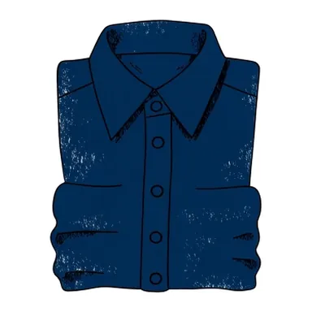
das Hemd, die Hemden 셔츠
Lukas trägt ein blaues Hemd.Lukas는 파란 셔츠를 입고 있어요.
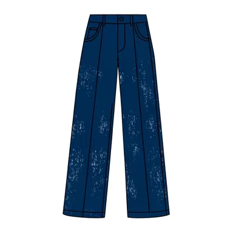
die Jeans, die Jeans 청바지
Die Jeans ist neu.청바지는 새것이에요.
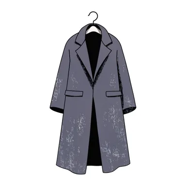
der Mantel, die Mäntel 코트
Im Winter trage ich einen Mantel.겨울에 나는 코트를 입어요.
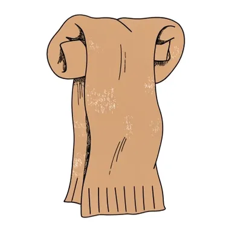
der Schal, die Schals 목도리, 스카프
Der Schal ist warm.목도리가 따뜻해요.
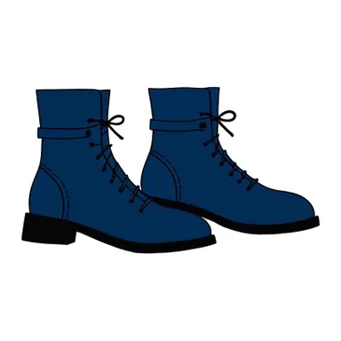
der Stiefel, die Stiefel 부츠, 장화
Die Stiefel sind schwarz.부츠는 검은색이에요.
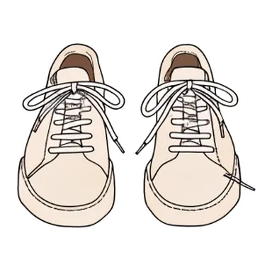
der Sneaker, die Sneaker 운동화, 스니커즈
Ich trage jeden Tag Sneaker.나는 날마다 운동화를 신어요.
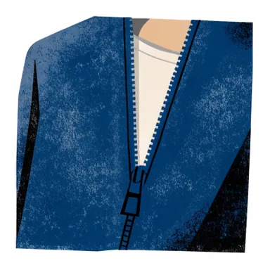
der Reißverschluss, die Reißverschlüsse 지퍼
Der Reißverschluss ist kaputt.지퍼가 고장 났어요.
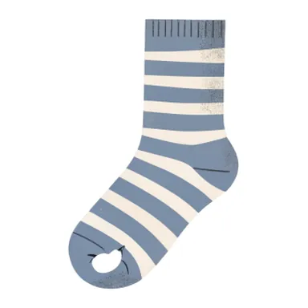
das Loch, die Löcher 구멍
Die Hose hat ein Loch.바지에 구멍이 났어요.
der Style, die Styles 스타일
Dein Style gefällt mir.네 스타일이 마음에 들어.
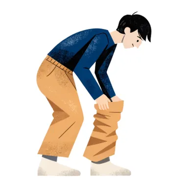
eng 꽉 끼는, 좁은
Die Hose ist mir zu eng.바지가 나한테 너무 꽉 껴요.
bequem 편한
Die Schuhe sind bequem.신발이 편해요.
modern 요즘 스타일의, 현대적인
Die Jacke ist modern.그 재킷은 요즘 스타일이에요.
bunt 알록달록한
Elif mag bunte Kleidung.Elif는 알록달록한 옷을 좋아해요.
hässlich 보기 싫은, 못생긴
Ich finde den Mantel hässlich.나는 그 코트가 보기 싫어요.
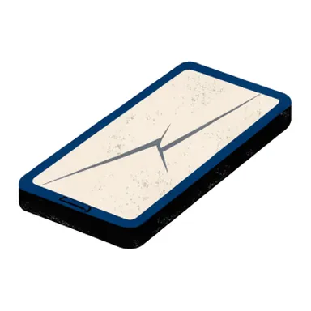
kaputt 망가진, 고장 난
Mein Handy ist kaputt.내 휴대폰이 고장 났어요.
Was für ein …? 어떤 ~?
Was für eine Jacke suchst du?어떤 재킷을 찾아?
das Geschäft, die Geschäfte 가게
Das Geschäft ist in der Stadt.그 가게는 시내에 있어요.
die Verkäuferin, die Verkäuferinnen (여자) 점원
Die Verkäuferin hilft mir.점원이 나를 도와줘요.
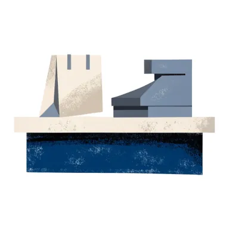
die Kasse, die Kassen 계산대
Bitte bezahlen Sie an der Kasse.계산대에서 계산해 주세요.
der Kassenbon, die Kassenbons 영수증
Hast du den Kassenbon noch?영수증 아직 있어?
das Angebot, die Angebote 할인 상품, 특가
Die Jacke ist im Angebot.그 재킷은 할인 중이에요.
umtauschen, hat umgetauscht 교환하다
Ich möchte die Schuhe umtauschen.신발을 교환하고 싶어요.
zurückgeben, hat zurückgegeben 돌려주다, 반품하다
Ich gebe die Jacke zurück.나는 재킷을 반품해요.
zurückbekommen, hat zurückbekommen 돌려받다
Du bekommst das Geld zurück.돈을 돌려받을 거야.
zurückschicken, hat zurückgeschickt 돌려보내다
Ich schicke die Schuhe zurück.나는 신발을 돌려보내요.
gehören, hat gehört ~의 것이다
Die Tasche gehört mir.그 가방은 내 거예요.
die Bewertung, die Bewertungen 후기, 평가
Ich lese zuerst die Bewertungen.나는 먼저 후기를 읽어요.
der Stern, die Sterne 별
Ich gebe fünf Sterne.나는 별 다섯 개를 줘요.
이 과의 낱말로 여덟 문제를 풀어요.
예문을 보고 답해 보세요.
3격에서 관사 뒤의 형용사 끝은 어떻게 되나요?
규칙
mit, in, von, bei 같은 전치사 뒤에는 3격이 와요. 3격에서는 관사가 dem, der, den, einem, einer로 바뀌고, 관사 뒤의 형용사 끝은 성과 수에 상관없이 언제나 -en이에요.
| 명사 | 3격 | 예 |
|---|---|---|
| der Pullover | mit dem / einem roten Pullover | der Mann mit dem roten Pullover |
| die Jacke | mit der / einer grünen Jacke | das Mädchen mit der grünen Jacke |
| das Hemd | mit dem / einem blauen Hemd | Lukas mit dem blauen Hemd |
| die Schuhe (복수) | mit den weißen Schuhen | Yuna mit den weißen Schuhen |
주의 복수 3격에서는 명사에도 -n이 붙어요. die Schuhe → mit den Schuhen.
예문을 보고 답해 보세요.
Die Tasche gehört mir. 에서 mir는 몇 격인가요?
규칙
passen(맞다), gehören(~의 것이다), helfen(돕다), gefallen(마음에 들다), stehen(어울리다)은 사람을 3격으로 써요. 한국어 '나를 도와줘'의 '를'을 보고 mich를 쓰면 틀려요. Hilf mir!
| 1격 | 3격 | 예 |
|---|---|---|
| ich | mir | Die Hose passt mir. |
| du | dir | Die Farbe steht dir. |
| er, es | ihm | Das Hemd gefällt ihm. |
| sie | ihr | Die Tasche gehört ihr. |
| wir | uns | Könnten Sie uns helfen? |
| ihr | euch | Gefällt euch das Geschäft? |
| sie, Sie | ihnen, Ihnen | Kann ich Ihnen helfen? |
주의 누구 것인지 물을 때는 Wem?을 써요. Wem gehört die Tasche? – Mir.
예문을 보고 답해 보세요.
Was für eine Jacke suchst du? 에 알맞은 답은 무엇인가요?
규칙
Was für ein …?은 종류나 특징을 물어요. 답은 ein, eine와 형용사로 해요. ein은 뒤에 오는 명사의 성과 격에 맞춰요. 복수 명사 앞에서는 ein 없이 Was für …?라고 해요.
| 물음 | 답 |
|---|---|
| Was für ein Pullover ist das? | Ein warmer Pullover. |
| Was für eine Jacke suchst du? | Eine leichte Jacke. |
| Was für einen Rock möchtest du? | Einen kurzen Rock. |
| Was für Schuhe trägst du? | Bequeme Schuhe. |
주의 여럿 가운데 하나를 고를 때는 Welche Jacke nimmst du?라고 묻고 Die grüne.처럼 der, die, das로 답해요. Was für eine Jacke?에는 Eine grüne.처럼 ein으로 답해요.
Emma가 Lukas에게 음성 메시지를 보냈어요. 듣고 답하세요.
Emmas Nachricht
Emma Hallo Lukas! Ich war heute mit Yuna und Elif in der Stadt.
Emma Yuna hat eine grüne Jacke gekauft. Sie steht ihr sehr gut.
Emma Ich habe ein weißes T-Shirt und einen schwarzen Rock gekauft.
Emma Elif hat nichts gekauft. Die Jacken haben ihr nicht gefallen.
Emma Morgen trage ich den neuen Rock in der Schule.
Was hat Yuna gekauft?
Was hat Emma gekauft?
Elif hat eine Jacke gekauft.
Elif hat nichts gekauft.
Emma는 내일 무엇을 입고 학교에 가나요?
듣고 알맞은 것을 고르세요.
바지가 어떤가요?
Die Hose ist mir zu eng.
파란 목도리는 누구 것인가요?
Der blaue Schal gehört Paul.
Yuna는 왜 신발을 바꾸려고 하나요?
Ich möchte die Schuhe umtauschen. Sie sind zu klein.
Paul은 무엇을 쓰고 있나요?
Der Junge mit der roten Mütze ist Paul.
온라인 가게에 올라온 운동화 후기예요. 읽고 답하세요.
Bewertungen: Sneaker „City“
Lena, 15 – fünf Sterne: Tolle Schuhe! Sie sind sehr bequem und sie passen mir gut. Ich trage sie jeden Tag.
Jonas, 14 – zwei Sterne: Die Schuhe sehen gut aus, aber sie sind mir zu eng. Ich musste sie zurückschicken. Bestellt eine Nummer größer!
Mia, 16 – vier Sterne: Die Farbe gefällt mir sehr. Die Schuhe sind schnell gekommen. Aber nach zwei Wochen war ein Schuh schon kaputt. Das Geschäft hat mir neue Schuhe geschickt.
Wer trägt die Schuhe jeden Tag?
Warum hat Jonas die Schuhe zurückgeschickt?
Mia gefällt die Farbe nicht.
Die Farbe gefällt mir sehr.
Mia의 신발이 망가졌을 때 가게는 어떻게 했나요?
Jonas sagt, dass man die Schuhe eine Nummer größer bestellen soll.
옷 가게 계산대에 붙은 안내문이에요. 읽고 답하세요.
Umtausch
Sie können Kleidung in 14 Tagen umtauschen.
Bitte bringen Sie den Kassenbon mit.
Kleidung im Angebot kann man nicht umtauschen.
Ist etwas kaputt? Dann bekommen Sie neue Kleidung oder Ihr Geld zurück.
Wie lange kann man Kleidung umtauschen?
Man braucht den Kassenbon.
Kleidung im Angebot kann man umtauschen.
Kleidung im Angebot kann man nicht umtauschen.
할인 상품으로 산 재킷의 지퍼가 고장 났어요. 어떻게 되나요?
물건이 고장 났을 때는 할인 상품이어도 새것이나 돈을 받아요.
3격이에요. 알맞은 형용사 끝을 고르세요.
Das Mädchen mit der Jacke heißt Yuna.
Der Mann mit dem Bart ist Thomas.
Ich trage die Jacke mit einem T-Shirt.
Lukas kommt in einer Hose.
Mit den Schuhen siehst du gut aus.
Paul ist der Junge mit der Mütze.
1격, 4격, 3격이 섞여 있어요. 알맞은 형용사 끝을 고르세요.
Das ist eine Jacke.
Ich kaufe den Pullover.
남성 4격 den 뒤에는 -en이에요.
Die Hose ist zu eng.
Sie kommt mit einem Hund.
mit 뒤는 3격이라서 -en이에요.
Er trägt ein Hemd.
3격 대명사예요. 알맞은 말을 고르세요.
Die Jacke passt gut.
passen은 3격과 함께 써요.
Kann ich helfen?
Das ist Pauls Schal. Der Schal gehört .
Emma mag den Rock. Der Rock gefällt .
Könnten Sie helfen?
Wem gehört die Tasche? – Sie gehört .
Was für ein …? 알맞은 말을 고르세요.
Was für Jacke suchst du? – Eine leichte Jacke.
Was für Pullover möchtest du? – Einen warmen Pullover.
möchten 뒤는 4격이라서 남성은 einen이에요.
Was für Hemd trägst du? – Ein weißes Hemd.
Was für trägst du gern? – Bequeme Schuhe.
복수 앞에는 ein을 쓰지 않아요.
Was für eine Hose suchst du? – Hose.
낱말을 순서대로 눌러 문장을 만드세요.
재킷이 나한테 잘 맞아.
그 가방은 누구 거야?
신발을 교환하고 싶어요.
돈을 돌려받을 수 있을까요?
낱말과 뜻을 짝지으세요.
듣고 그대로 써 보세요.
Was für eine Jacke suchst du? 어떤 재킷을 찾아?
Sie passt mir gut. 나한테 잘 맞아.
Kann ich die Jacke umtauschen? 재킷을 교환할 수 있을까요?
Was für einen Style magst du? 어떤 스타일을 좋아해?
Ich trage gern bequeme Kleidung. 나는 편한 옷을 즐겨 입어.
Ich mag keine engen Hosen. 나는 꽉 끼는 바지는 안 좋아해.
Das steht dir! 너한테 어울려!
das Mädchen mit der grünen Jacke 초록색 재킷을 입은 여자아이
der Junge mit dem blauen Hemd 파란 셔츠를 입은 남자아이
Ich möchte die Jacke umtauschen. 재킷을 교환하고 싶어요.
Kann ich das Geld zurückbekommen? 돈을 돌려받을 수 있을까요?
Hier ist der Kassenbon. 영수증 여기 있어요.
Der Reißverschluss ist kaputt. 지퍼가 고장 났어요.
Die Schuhe sind mir zu klein. 신발이 저한테 너무 작아요.
Die Hose hat ein Loch. 바지에 구멍이 났어요.
대화 B에서 역할을 하나 고르세요. 상대의 말은 음성으로 나오고, 내 차례에는 직접 말해요.
즐겨 입는 옷과 좋아하지 않는 옷, 오늘 입은 옷을 적으세요. 완성된 문장을 소리 내어 읽어 보세요.
Ich trage gern bequeme Hosen.
Ich mag keine engen Jacken.
Heute trage ich einen blauen Pullover.
Eine Bewertung
얼마 전에 산 옷이나 신발의 후기를 써 보세요. 여섯 문장쯤 써요.
Ich habe eine schwarze Hose gekauft. Sie ist weit und sehr bequem. Die Hose passt mir gut und die Farbe gefällt mir. Aber nach einer Woche war der Reißverschluss kaputt. Ich musste die Hose umtauschen. Die neue Hose ist gut. Ich gebe drei Sterne.
다 쓴 뒤에 확인해 보세요.
Ich kann Kleidung und meinen Style beschreiben.옷과 내 스타일을 묘사할 수 있어요.
Ich kann sagen, dass etwas kaputt ist oder nicht passt.물건이 고장 났거나 맞지 않는다고 말할 수 있어요.
Ich kann etwas umtauschen oder zurückgeben.물건을 교환하거나 돌려줄 수 있어요.